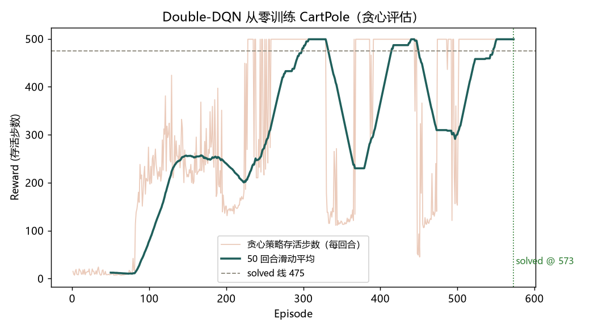

为了真正弄懂强化学习，我从零实现了一个 Double-DQN——自己写了 CartPole 环境和训练算法，不借助现成的 RL 库。目标是让智能体学会把杆平衡起来：目前它已从随机策略 （活 ~10 步）训练到稳定解决 CartPole（贪心策略 100 回合平均 478，超过 475 的 官方判定线）。下一步想试试连续控制里的 PPO。

现成的 RL 库很方便，但我想真正理解 DQN 的每一步，所以环境和算法都自己实现了一遍。 过程中体会到不少坑：Q 值高估、目标网络漂移、探索与利用的平衡、学会又忘记—— 这些光看别人的代码不容易懂，亲手调一遍才明白。
比如最初的朴素 DQN 训练曲线反复震荡（冲到 400 又崩回 200），后来用了 Double-DQN、软更新目标网络，并用贪心策略判定是否解决，曲线才稳定越过 475。 比起结果，这段调试过程让我收获更大。
接下来的计划：CartPole（离散，已完成）→ Pendulum / MountainCar（连续）→ PPO → 迁移到 MuJoCo。
完整代码与训练脚本已整理成一个独立小项目，需要的话欢迎联系我。